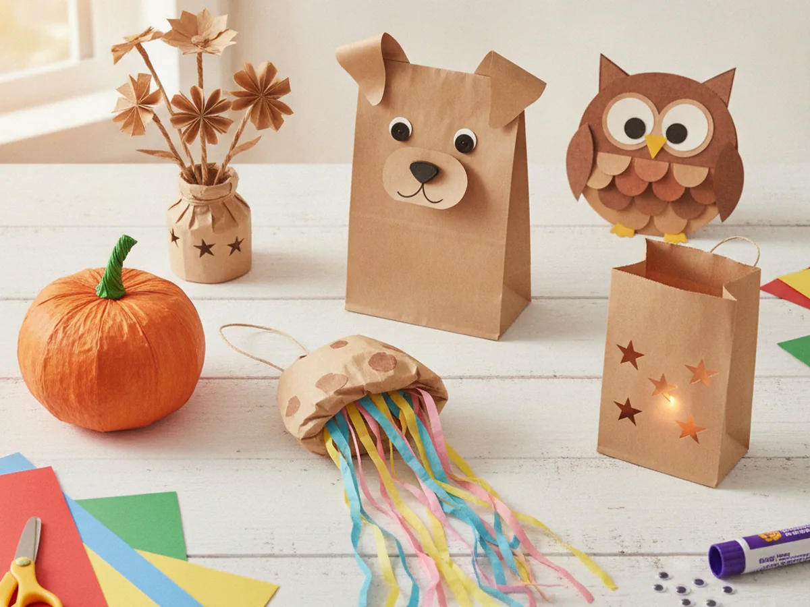
There is something wonderfully comforting about a humble brown paper bag. It costs almost nothing, you probably have a stack tucked in a kitchen drawer right now, and your kids can turn it into just about anything. These paper sack crafts prove that you do not need a fancy kit or a Pinterest-perfect setup to have a sweet, giggly afternoon together. Grab a few bags and let's make something you will both be proud of. 🤎
What You'll Need
Most of these paper sack crafts share the same handful of basics, so gather these once and you will be ready for almost every idea on the list.
- Brown paper lunch bags, the star of every project and cheap enough to make a whole batch.
- Construction paper, perfect for ears, wings, manes, feathers, and bright details.
- Washable glue sticks, easy for little hands and no sticky puddles to clean up.
- Kids safety scissors, blunt-tip and just right for small fingers.
- Self-adhesive googly eyes, the magic touch that brings every animal to life.
- Crayola broad line markers, for faces, patterns, and happy scribbles.
- Assorted tissue paper, great for tentacles, streamers, and fluffy decorations.
- Flameless LED tea lights, the safe way to make a paper lantern glow.
- Yarn or string, handy for hanging mobiles, kites, and windsocks.
20 Easy Paper Sack Craft Ideas
1. Paper Sack Puppy Puppet
The fold at the bottom of a paper bag makes the perfect puppet mouth, which is why paper sack crafts almost always start with a friendly puppy. Slide your hand inside, glue two floppy paper ears on the sides, add googly eyes and a little pink tongue, and you have a pup that can bark, talk, and ask for treats. Kids will put on shows for the whole family before the glue is even dry.
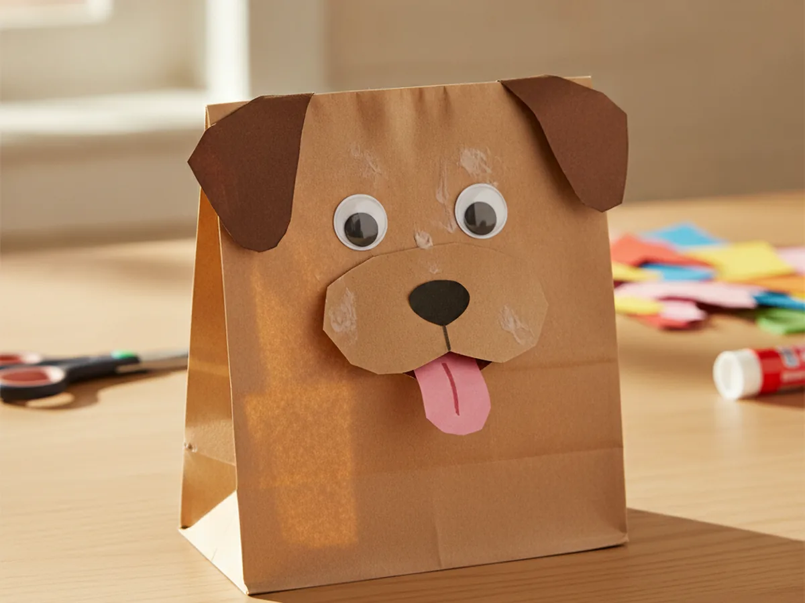
2. Paper Sack Bunny Puppet
Turn that same bag into a sweet bunny with two tall paper ears and a fluffy cotton ball tail. A small pink nose and a few marker whiskers are all it takes to make this one melt your heart. This is a lovely spring project, and the soft, gentle look makes it a favorite paper sack craft for toddlers who adore anything cuddly.
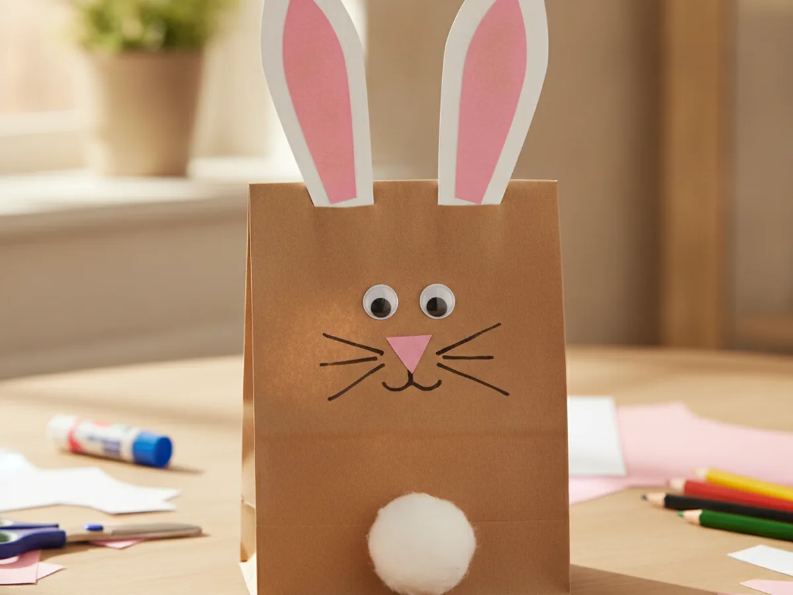
3. Paper Sack Owl
Owls are endlessly cute, and a flat paper bag makes a roly-poly body that practically begs for layered feathers. Cut rows of rounded paper scallops, glue them on like shingles, then add two big round eyes and a little triangle beak. Fold the top corners down for ear tufts and your wise little friend is ready to perch on a shelf.
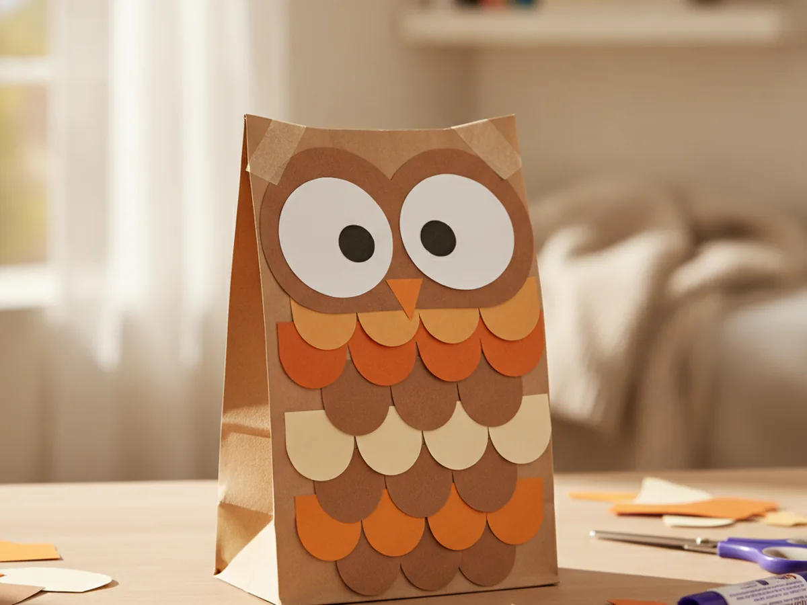
4. Paper Sack Lion
A roaring lion is a confidence-boosting craft because the wild mane hides any wobbly cutting. Snip strips of orange and yellow paper, fringe the edges, and glue them in a ring around the bag's face for a full, shaggy look. Add a rounded nose and googly eyes, and your little one will be roaring proudly across the living room in no time. 🦁
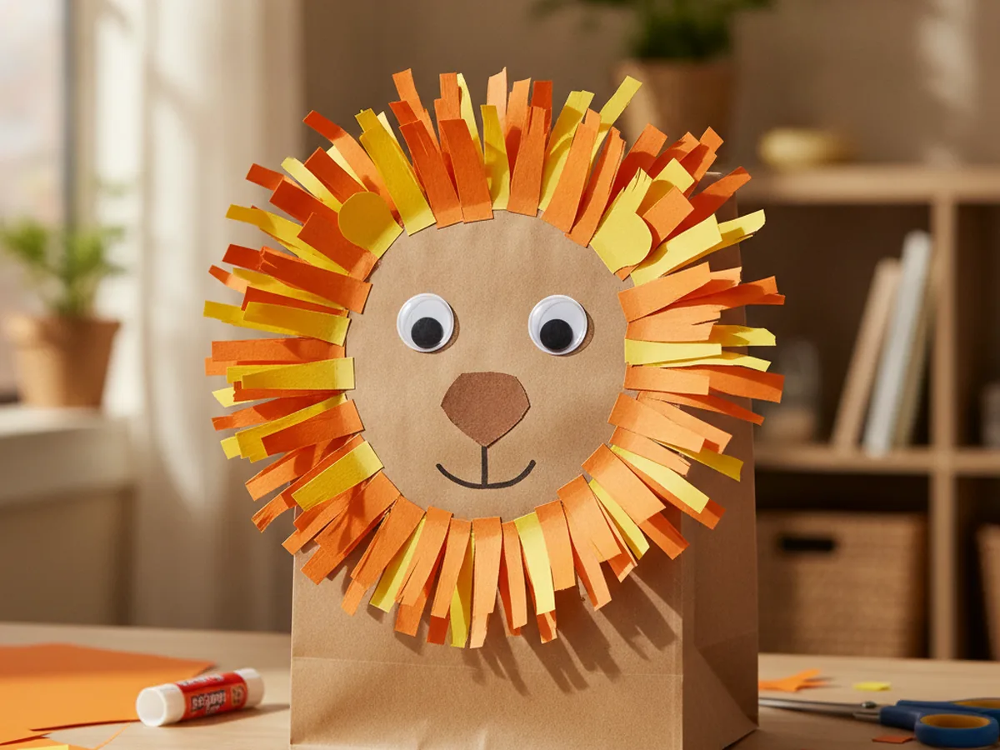
5. Paper Sack Monster
Some of the best paper sack crafts are the silly ones, and a googly-eyed monster lets your child go wild with no rules at all. Glue on mismatched eyes, jagged paper teeth, and a tuft of yarn hair sticking straight up. There is no wrong way to make a monster, which makes this one a stress-free win for beginners and a giggle factory for the whole family.
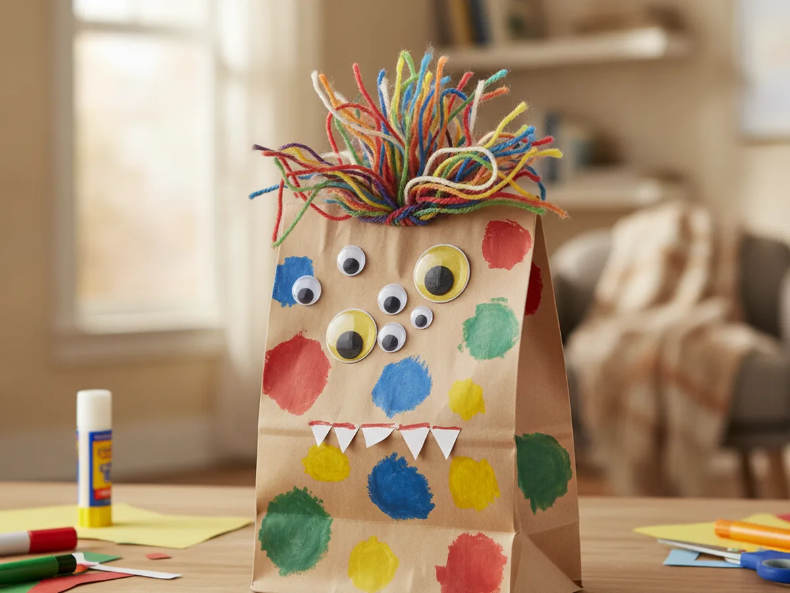
6. Paper Sack Jellyfish
Open a paper bag, round off the bottom into a soft dome, and you have the perfect jellyfish bell. Glue long strips of tissue paper and curled streamers underneath for floaty tentacles, then thread a string through the top to hang it. Bobbing gently from the ceiling, this dreamy under-the-sea craft brings a little ocean magic into any bedroom.
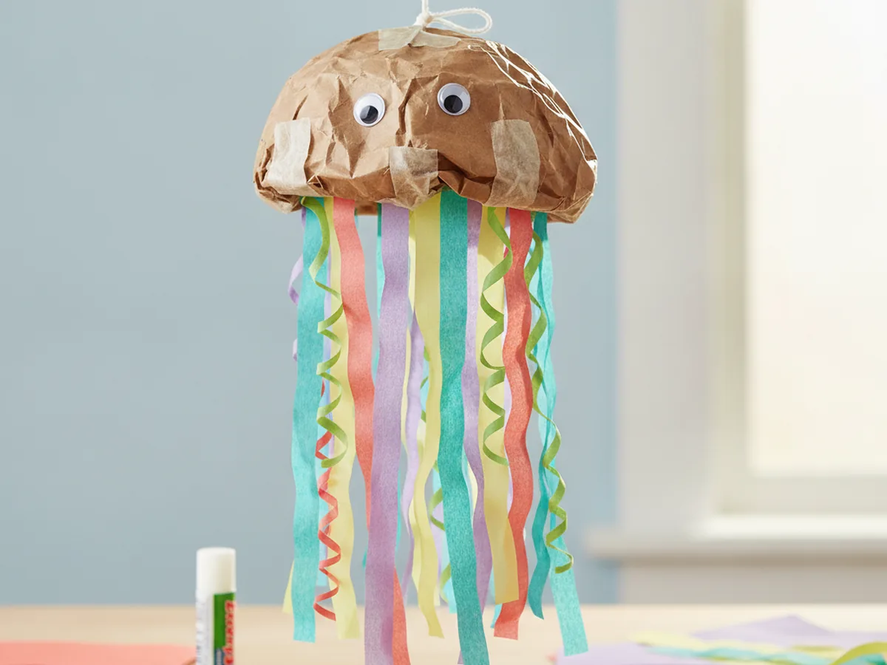
7. Paper Sack Fish
Lightly stuff a paper bag with a little crumpled scrap paper, tape the open end into a tail, and you have a chubby fish ready for decorating. Kids love gluing on overlapping paper scale circles in rainbow colors and adding one big goofy eye. Make a few in different sizes and you have a whole school swimming across the table.
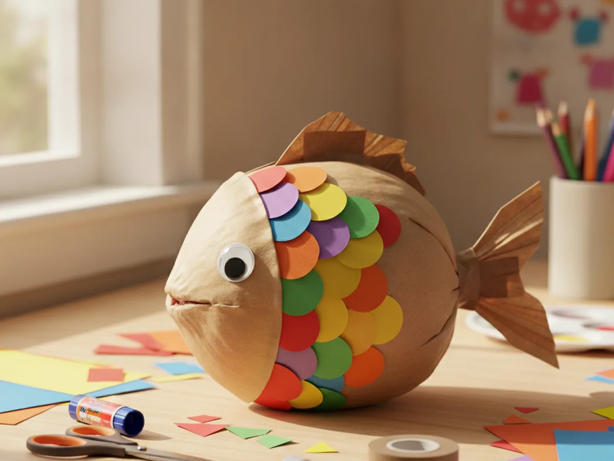
8. Paper Sack Snake
Roll a paper bag into a long tube, stuff it gently, and twist it into a slithery snake shape. A coat of green paint or green paper, a forked red paper tongue, and two googly eyes finish the job. This wiggly creature is a fun way to use up an extra bag, and kids love making it hiss its way around the house.
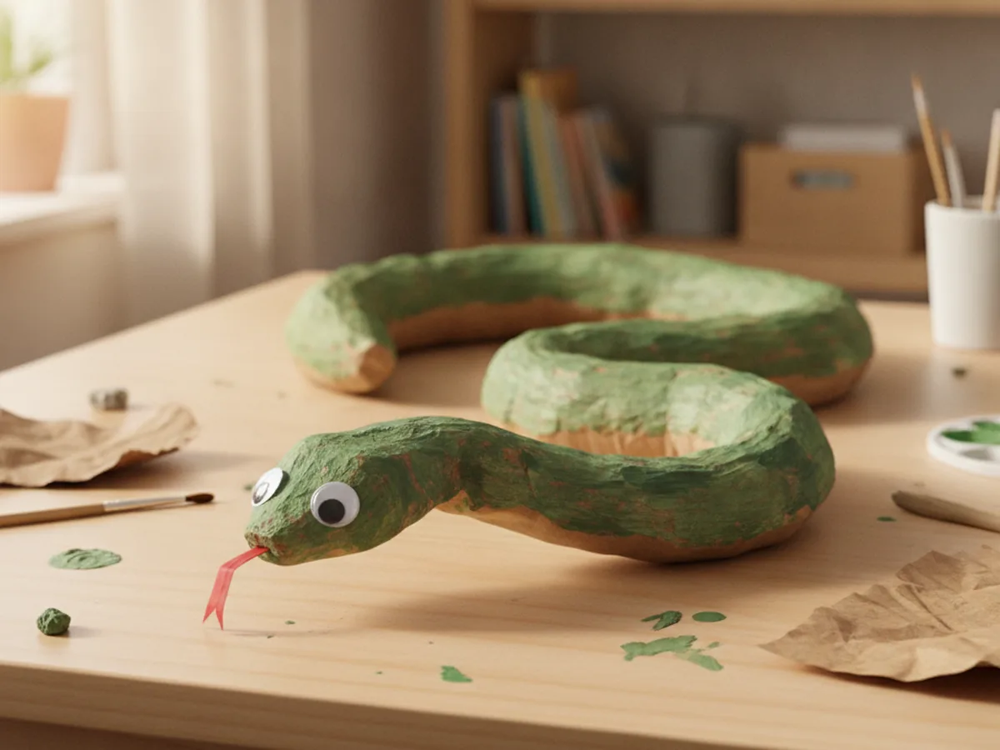
9. Paper Sack Kite
Not every paper sack craft has to sit on a shelf, and this easy kite is made for running outside. Decorate a flat bag with bright drawings, poke a small hole near the top for a yarn handle, and tape a long crepe paper streamer tail to the bottom. It will not soar like a real kite, but watching it flutter behind a sprinting, laughing child is the whole point. 🪁
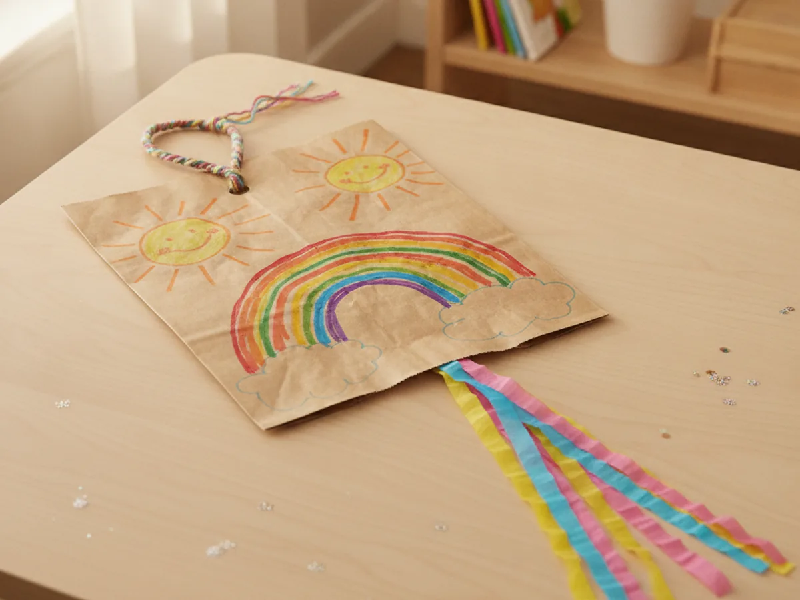
10. Paper Sack Windsock
Cut the bottom off a paper bag to make an open tube, then let your child decorate the outside with stickers, stamps, or markers. Glue colorful tissue streamers around the bottom edge and attach a string at the top to hang it by a window or on the porch. Every little breeze sets the tails dancing, which is endlessly satisfying for young watchers.
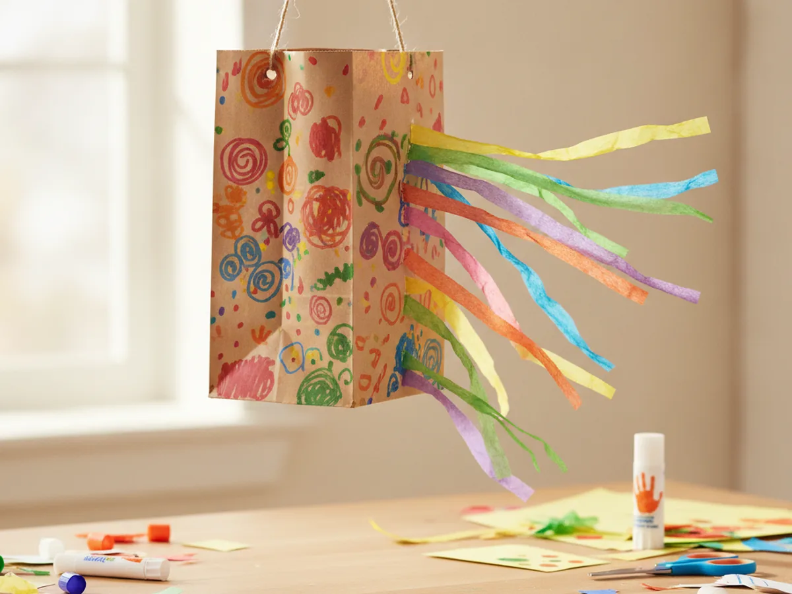
11. Paper Sack Pumpkin
This one is pure fall magic and could not be simpler. Stuff a brown bag with crumpled newspaper, twist the top into a stem, and tie it with string or a rubber band. A coat of orange paint and a drawn-on jack-o-lantern face turn an ordinary sack into a chunky little pumpkin that looks adorable lined up on the windowsill.
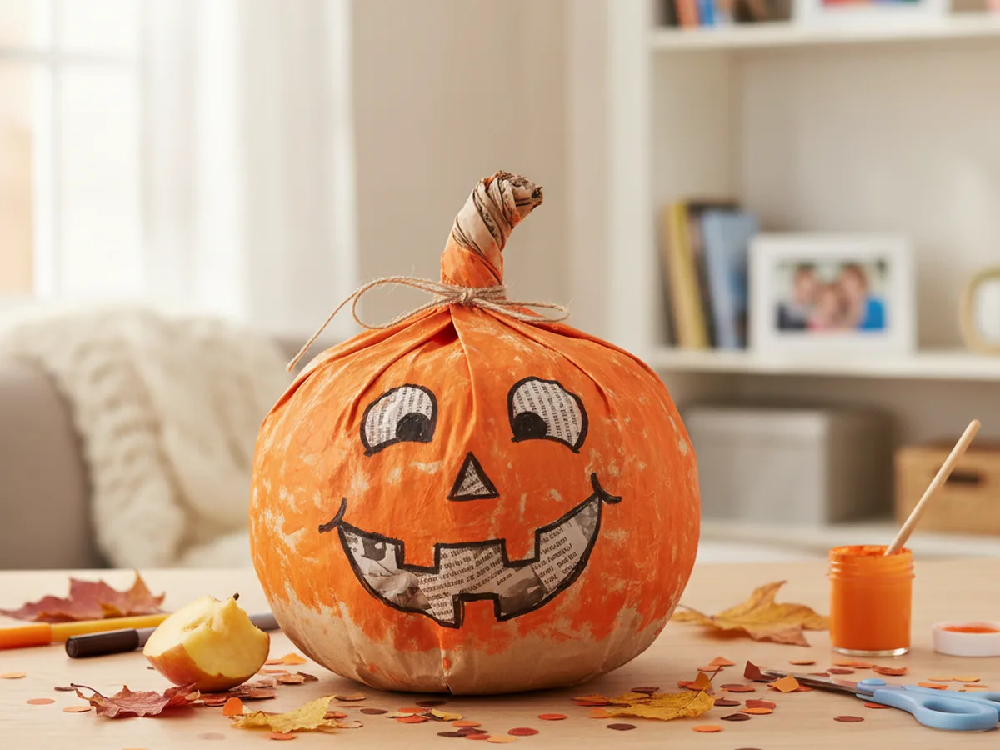
12. Paper Sack Scarecrow
Stuff a paper bag, tie off the top, and you have the round head for a friendly scarecrow. Add yarn or raffia hair poking out the sides, a little paper hat, and a cheerful drawn-on face with rosy cheeks. This cozy autumn paper sack craft feels like a warm hug and looks wonderful as a centerpiece for a harvest dinner.
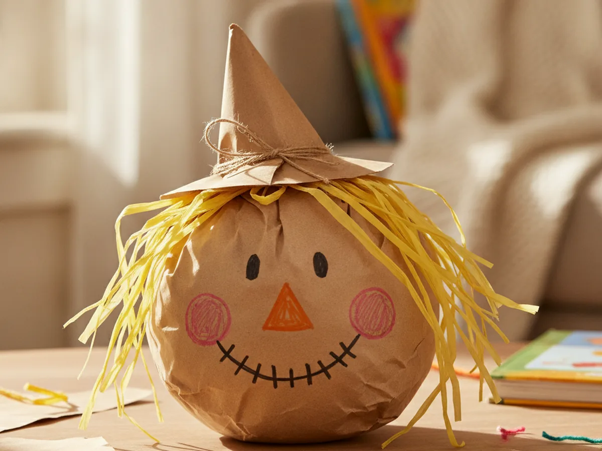
13. Paper Sack Turkey
Thanksgiving turkeys are a classroom classic, and the paper bag version is wonderfully huggable. Stuff and tie a bag for the body, fan out colorful paper feathers behind it, and add a round head with a wattle and a beak. Little ones can even glue on a feather for each thing they are thankful for, turning a craft into a sweet family moment. 🦃
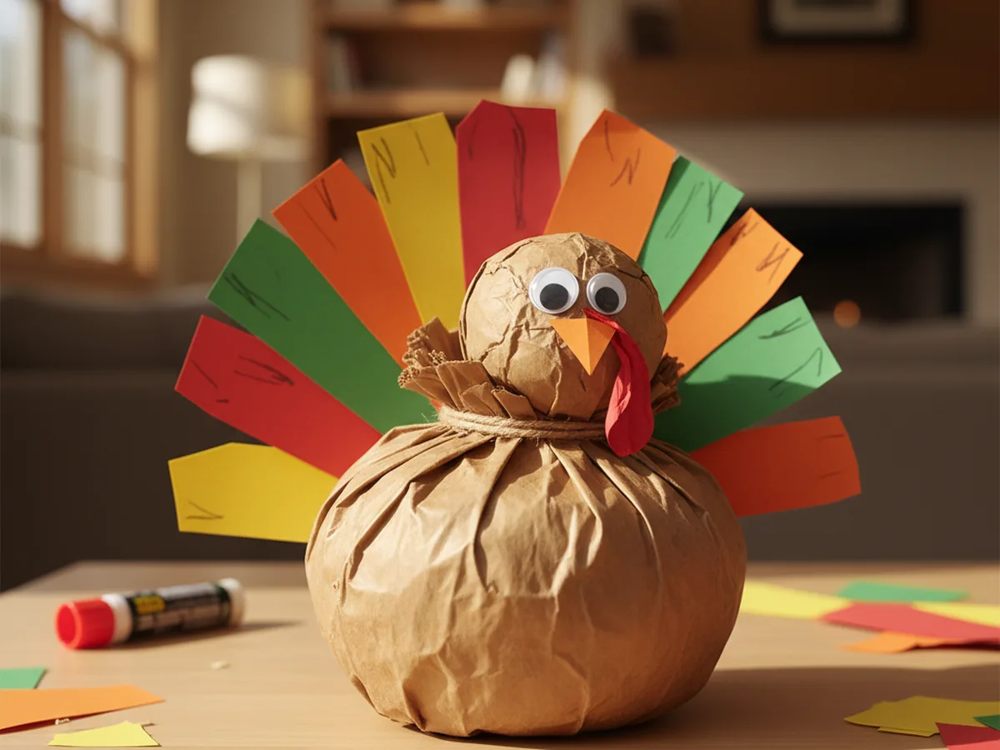
14. Paper Sack Tree
This clever trick feels like a little bit of wizardry to kids. Roll a paper bag into a tube, cut several slits down from the top, then reach inside and gently pull the center up while twisting to form a gnarled tree with branches. Add paper leaves, cotton blossoms, or fall colors depending on the season, and watch your child's eyes light up.
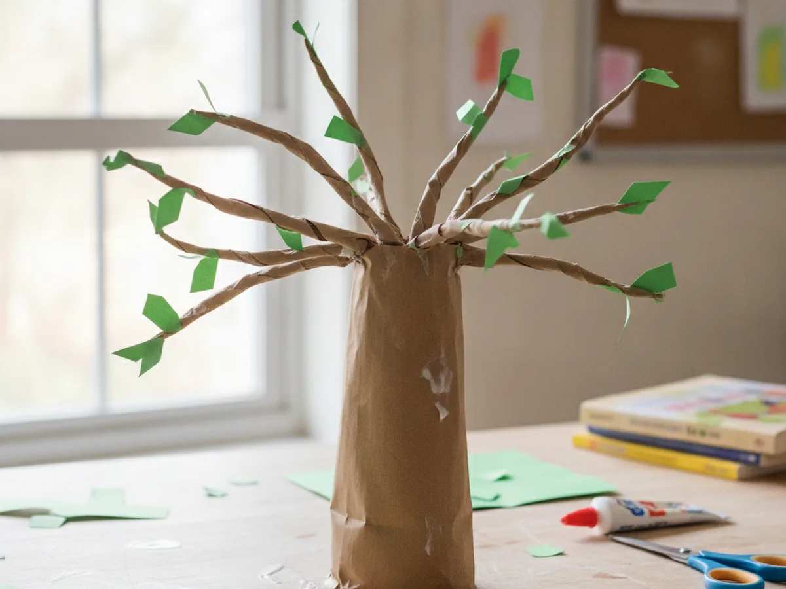
15. Paper Sack Bird's Nest
Roll the top of an open paper bag down into a thick rim and shape it into a cozy little nest. Fill it with shredded paper or torn brown strips for a soft lining, then tuck in a few pom-pom or paper eggs. Add a tiny paper bird on the edge and you have a springtime scene that is gentle enough for the youngest crafters.
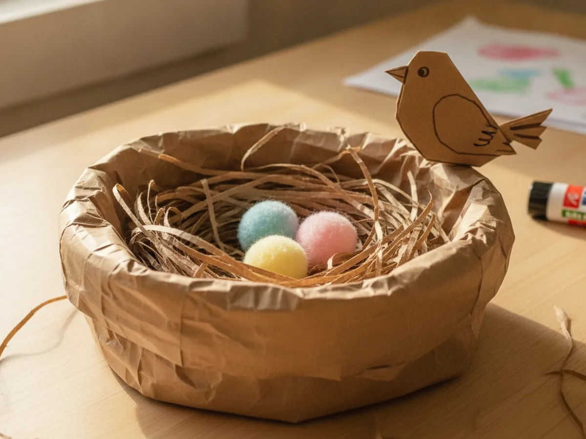
16. Paper Sack Vest
Grab a large grocery sack and turn it into a wearable vest for dress-up play. Cut a slit up the front, a circle for the neck, and two armholes on the sides, then snip a fringe along the bottom edge. Kids can decorate their vest as a cowboy, an explorer, or a superhero, and the dress-up fun lasts long after the crafting is done.
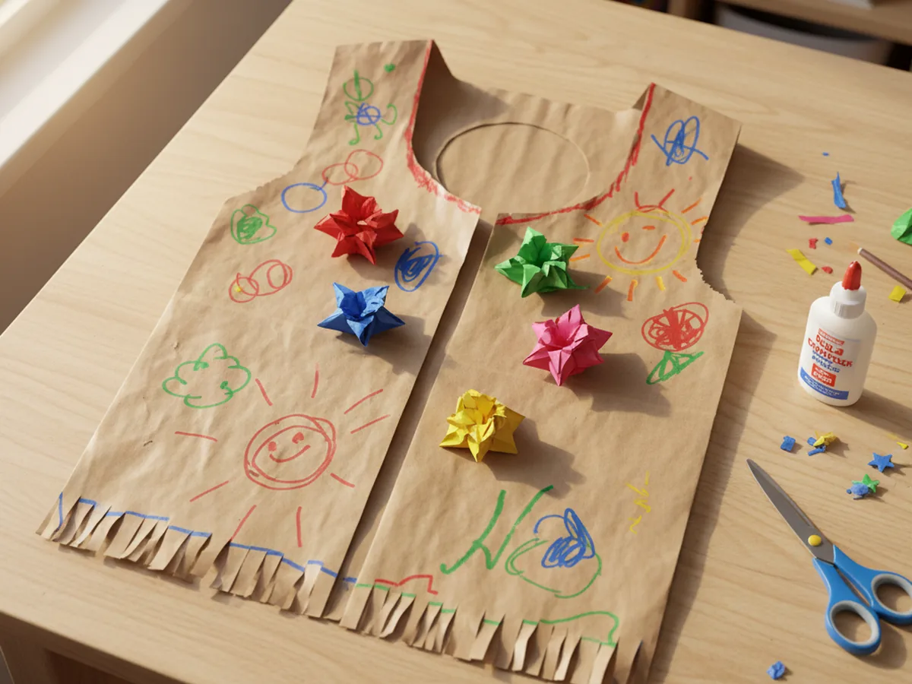
17. Paper Sack Gift Bags
Plain brown bags become charming handmade gift bags with just a few minutes of decorating. Let your child stamp, draw, or glue on paper shapes, then fold the top and punch two holes for a ribbon handle. These are perfect for birthday party favors or a heartfelt little present for grandma, and the personal touch means so much. 🎁
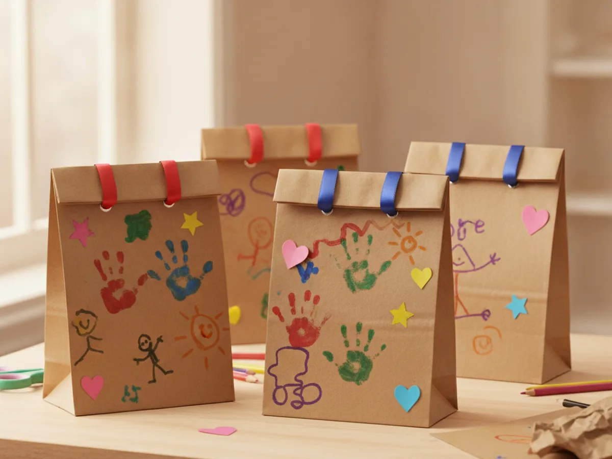
18. Paper Sack Lantern
A glowing paper lantern feels almost too special to be this easy. Help your child cut simple windows or punch a pattern of holes into the sides of a bag, then drop a flameless LED tea light inside so it shines through. Always skip real candles and use a battery light for safe, worry-free glow at a sleepover, a porch night, or a cozy reading corner.
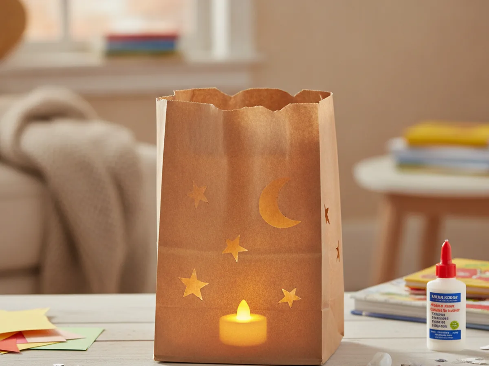
19. Paper Sack Piñata
You do not need papier mache for a party piñata when a paper bag will do. Fill a bag with a few small treats, scrunch and tie the top, then cover it in fringed tissue paper rows for that classic ruffled look. Hang it low, let the kids give it a gentle tap with a cardboard tube, and enjoy the happy scramble when the goodies tumble out.
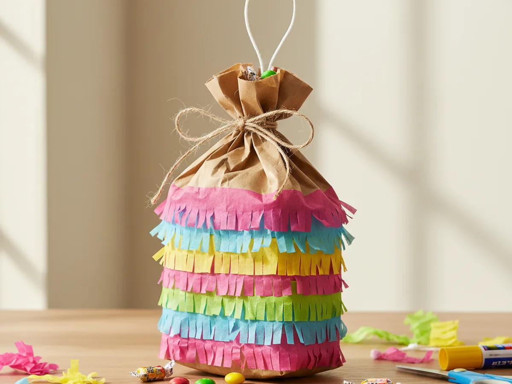
20. Paper Sack Flower Bouquet
End the list with a bouquet that never wilts. Cut flower shapes from flattened paper bags, layer and pinch the centers to give them dimension, and glue them onto paper or pipe cleaner stems. Bunch them together with a ribbon and you have a heartfelt homemade gift, which makes this one of the most rewarding paper sack crafts to give away with a proud little smile. 💐
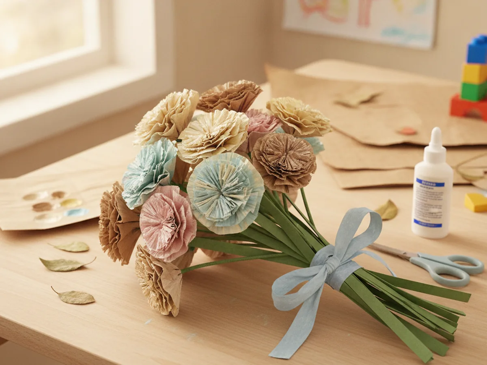
Final Thoughts
The best part of these paper sack crafts is how little they ask of you and how much they give back. A drawer of plain brown bags, a few markers, and a slow afternoon are all you need to turn an ordinary day into a memory. Pick just one idea to start, let your child lead the way, and do not worry about lopsided ears or crooked smiles. Those little imperfections are exactly what makes a handmade craft something your family will treasure.
More Crafts You'll Love
If your crew is on a paper crafting roll, here are two more easy roundups packed with simple ideas to try next.
However you fold, cut, and glue them, paper sacks are proof that the simplest supplies make the sweetest moments together.